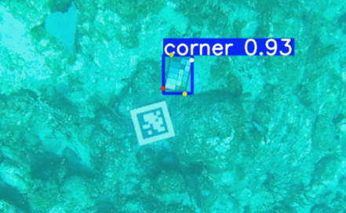
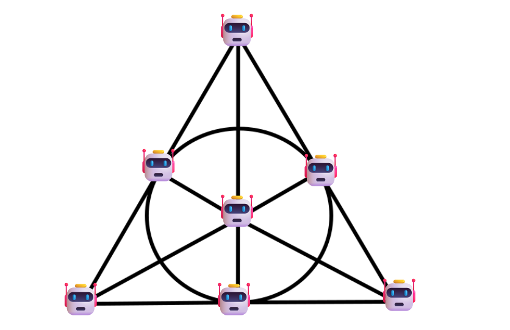
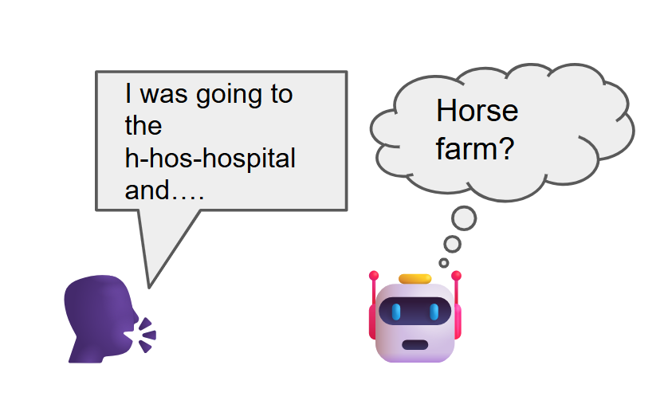
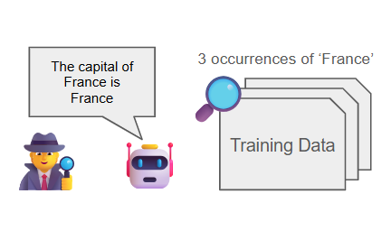
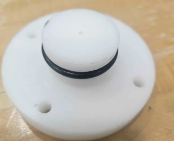

Color Card Detection
Finding and aligning calibration cards in hazy underwater images, where familiar detection methods struggle.
Read the projectAbout
I’m an electrical and computer engineering student and a research intern at MIT CSAIL, where I use vision-language models to track fish and guide a biomimetic turtle robot. Before that, I built underwater object detection pipelines at WHOI and wrote a sole-author paper on multi-robot communication for an ICRA 2026 workshop.
The ocean keeps me honest. Haze, light attenuation, and spotty connectivity break most of what works on land, so I focus on the part demos skip: knowing when a model is wrong. That has taken me into failure-mode analysis and interpretability probes for vision-language models.
Always happy to talk about perception, reliability, and robots that leave the lab.
Connect on LinkedInSelected work

Finding and aligning calibration cards in hazy underwater images, where familiar detection methods struggle.
Read the project
Using combinatorial schedules to help robot swarms reach consensus faster when packets are lost.
Read the project
Fine-tuning and evaluating speech recognition models for more accurate transcription of stuttered speech.
Read the project
Exploring whether the frequency of facts in training data can help predict when a model will answer incorrectly.
Read the project
A serviceable sensor enclosure that records temperature readings to an SD card.
Read the project